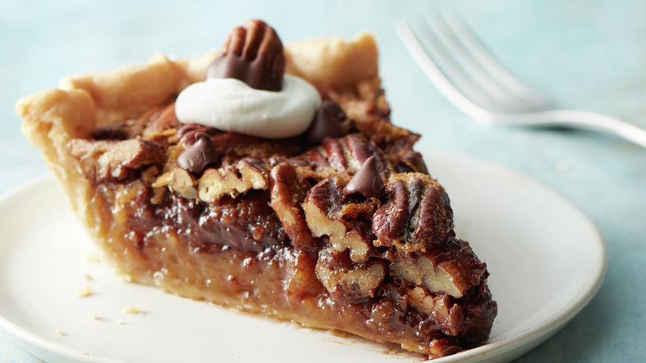
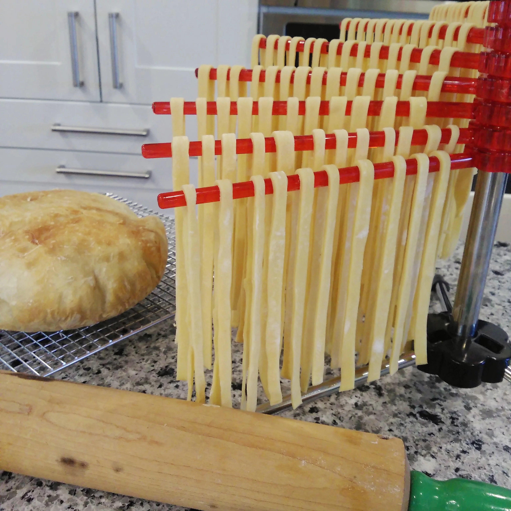

Origami's Sauce
Hello guys here is the sauce for foods I have promised
Pecan Pie

Description
A chocolate pecan pie will fit all your sugary desire for this upcoming thanksgiving
Ingredients
- 1 cup light corn syrup
- 1/2 cup sugar
- 1/4 cup butter or margarine, melted
- 1 teaspoon vanilla
- 3 eggs
- 1 cup semisweet chocolate chips (6 oz)
- 1 1/2 cups pecan halves
- 10 pecan halves
- 1/2 cup whipping cream, whipped
- 1 crust from 1 box (14.1 oz) refrigerated Pillsbury™ Pie Crusts (2 Count), softened as directed on box
Steps
- Heat oven to 325°F. 2. Place pie crust in 9-inch glass pie plate as directed on box for One-Crust Filled Pie.
- In large bowl, beat corn syrup, sugar, butter, vanilla and eggs with electric mixer on medium speed until well blended. Reserve 2 tablespoons chocolate chips for topping. Stir in remaining chocolate chips and 1 1/2 cups pecans. Spread evenly in crust-lined pan.
- Bake 55 to 65 minutes or until deep golden brown and filling is set. Cool completely, about 1 hour.
- Line cookie sheet with waxed paper. In small microwavable bowl, microwave reserved 2 tablespoons chocolate chips on Medium (50%) 1 to 1 1/2 minutes or until melted; stir. Dip each of 10 pecan halves in chocolate; place on lined cookie sheet. Refrigerate 15 to 20 minutes or until chocolate is set. Garnish pie with whipped cream and chocolate-dipped pecans. Store in refrigerator.
Pasta

Description
This is a great recipe to make your own yummy pasta
Ingredients
- 2 ½ cups Italian-style tipo 00 flour, plus additional for dusting
- 3 large eggs
- 1 pinch of salt
- 1 tablespoon water, or as needed
Steps
- Place flour on a marble or wooden work surface. Make a well in the center and crack in the eggs; add the salt. Gently beat eggs with a fork, incorporating the surrounding flour, until batter is runny. Bring remaining flour into the batter using a bench scraper until dough forms a ball. Mix in water, 1 tablespoon at a time, if dough feels too stiff.
- Knead dough with your hands by flattening the ball, stretching it and folding the top towards the center. Turn 45 degrees and repeat until dough is soft and smooth, about 10 minutes.
- Shape dough into a ball. Place in a bowl and cover with plastic wrap. Refrigerate until firm, 30 minutes to 1 hour.
- Dust work surface with flour. Divide dough into 3 equal portions. Flatten 1 piece a little and roll out 5 to 6 times with a rolling pin. Turn dough 45 degrees and roll 5 to 6 times. Continue rolling and turning until dough is 1/16-inch thick.
- Cut dough into a sheet. Dust generously with flour and roll into a cylinder. Slice cylinder into 1/4-inch thick strips. Unroll strips and toss generously in flour. Let tagliatelle air-dry, about 30 minutes.
- Bring a large pan of salted water to a boil. Drop in tagliatelle and cook until tender yet still firm to the bite, 3 to 5 minutes. Drain.
Waifus

Description
For those who are also weebs, from the anime "date a live" which features origami in a maid costume
Ingredients
- Culture
- Be down bad
- A weeb
Steps
- Watch anime
- Choose a waifu
- Accept weeb
Index